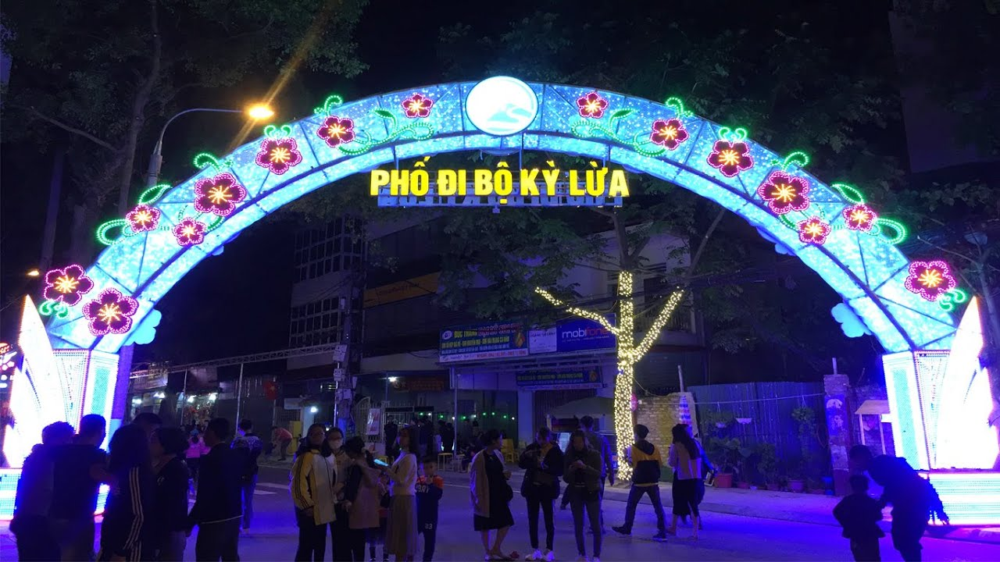
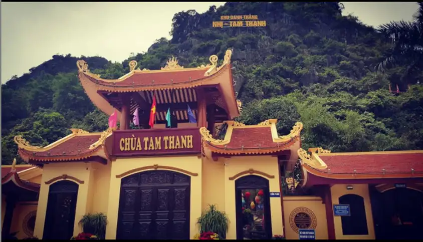
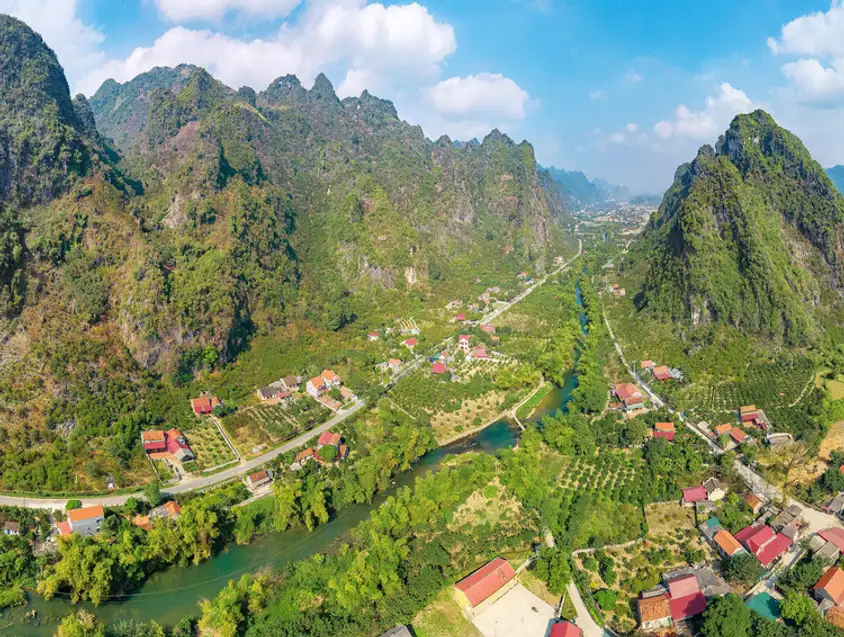
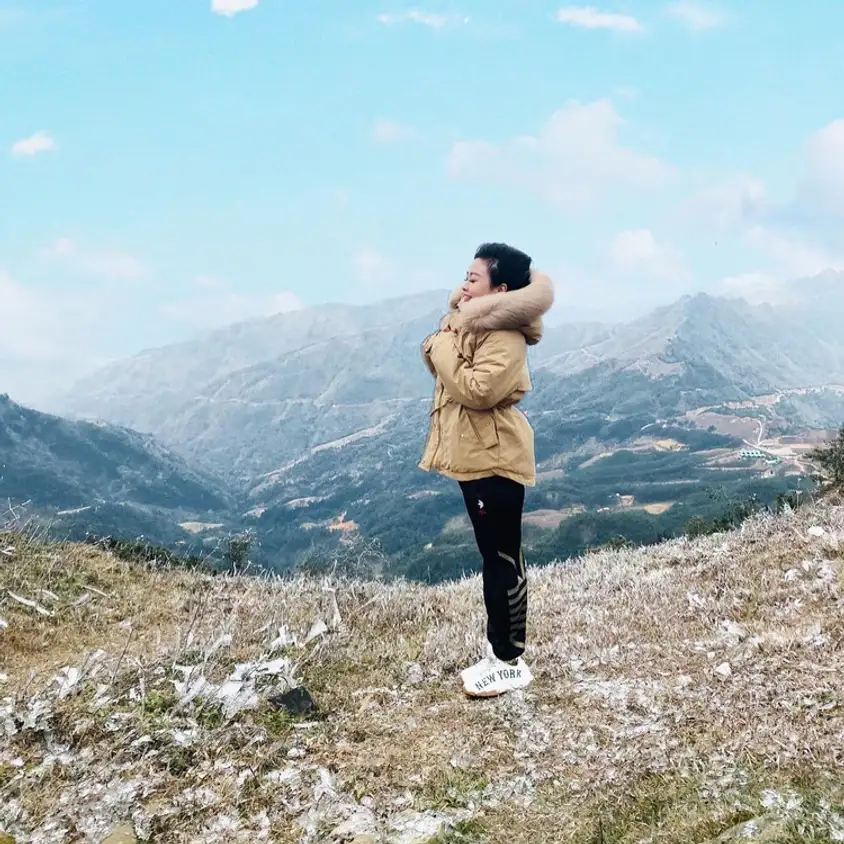

Cảnh đẹp tại Lạng Sơn
“Đồng Đăng có phố Kỳ Lừa/ Có nàng Tô Thị, có chùa Tam Thanh” Khá nhiều trong chúng ta đã đôi lần nghe qua 2 câu ca dao trên, cho thấy độ nổi tiếng của những danh lam thắng cảnh ở Lạng Sơn. Tất nhiên, nơi đây không chỉ có một vài địa danh ấy, mà có lẽ theo kinh nghiệm du lịch Lạng Sơn của tôi, thì mỗi góc cảnh nơi đất trời xa xôi này đều đáng khắc ghi thành kỉ niệm. Bạn thử đến các địa điểm gợi ý sau đây một lần nhé.Phố Kỳ Lừa
Làm sao bỏ qua được Phố Kỳ Lừa nổi tiếng trong bao câu cao dao tục ngữ. Phố Kỳ Lừa nằm gần cửa khẩu Đồng
Đăng, là địa danh “danh bất hư truyền” khi đến xứ Lạng mà bạn nhất định phải ghé thăm. Nơi đây là khu mua
bán sầm uất với đầy đủ các mặt hàng, mang trong mình hơi thở đặc trưng của con người xứ Lạng. Đây cũng là
nơi thấm nhuần văn hoá bản địa, vì thế tham quan phố Kỳ Lừa làm để nhìn thấy các giá trị lâu đời giao thoa
với giao thương hiện đại.


Chùa Tam Thanh
Chùa Tam Thanh là địa điểm du lịch tâm linh có thể nói là nổi bật nhất Lạng Sơn, chùa nằm trong Động Tam
Thanh, không gian mát mẻ bao trùm, núi non trùng điệp hiểm trở, sự uy nghiêm giữa đất trời và thiên nhiên
khiến ngôi chùa nhuốm màu sắc tâm linh diệu kì. Chùa Tam Thanh khiến bạn như vượt thời gian trở về quá khứ
với nhiều dấu ấn văn hoá - lịch sử được lưu giữ nơi đây.
Ải Chi Lăng
Tiếp đến lại là một địa danh sử oanh liệt của dân tộc ta - Ải Chi Lăng. Đến Ải Chi Lăng là tìm về sự thuần
khiết, hoang sơ của núi rừng. Ải Chi Lăng đứng sừng sững giữa muôn trùng vách đá, là điểm nhấn trong bức
tranh sơn thuỷ hữu tình của Lạng Sơn. Nơi đây thực sự thích hợp cho những ai yêu thích lịch sử, khảo cổ vì
nó mang trong mình những giá trị thời gian: những mảnh gốm, vật dụng bằng đá,... nhiều lần được tìm thấy, là
minh chứng sắc nét cho một nền văn minh cổ đại vô cùng nổi trội đã từng tồn tại nơi đây.


Đỉnh Mẫu Sơn
Thực sự thiếu sót nếu không nhắc đến tuyệt kỹ phong sắc Mẫu Sơn khi du lịch Lạng Sơn. Mẫu Sơn là biểu tượng
tiêu biểu cho du lịch nghỉ dưỡng tại khu vực này, với khí hậu mát mẻ quanh năm, cảnh sắc luân phiên theo
mùa, nằm tách biệt với sự ồn ào náo nhiệt của phố thị. Đặc biệt nhất,với độ cao trên 1.500m so với mực nước
biển, vào mùa Đông, định Mẫu Sơn thi thoảng sẽ xuất hiện tuyết rơi cực kì lãng mạn và ấn tượng.